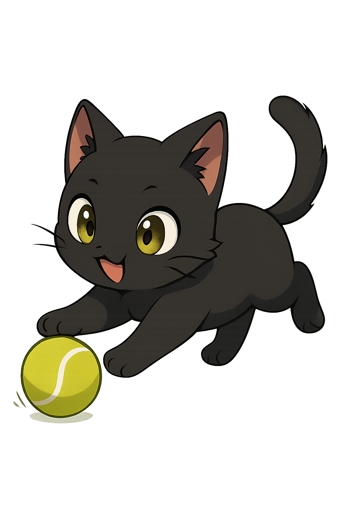

This website is intended solely for accessing publicly available data on manga. It is an academic project with no commercial intent, created exclusively for educational purposes.
How it work?
This website essentially simulates a manga catalog, heavily inspired by popular platforms—at least in its beta version. Here, you can access information about various manga titles, such as characters, chapters, and reviews. The latter two features are currently under development.
About Me
I am currently studying full-stack development, specifically with ASP.NET. In parallel, I am working on this website, which has always been a dream of mine since I began programming.
Developer:
Guilherme Rissi
Check my social medias, above